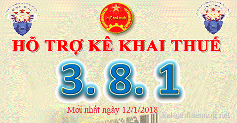

Phần mềm HTKK 3.8.1 mới nhất ngày 12/01/2018 của Tổng cục thuế là phần mềm hỗ trợ kê khai thuế mới nhất, các bạn có thể tải ứng dụng HTKK 3.8.1 miễn phí về tại đây nhé.
Nâng cấp ứng dụng Hỗ trợ kê khai (HTKK) phiên bản 3.8.1 đáp ứng yêu cầu nghiệp vụ theo Thông tư số 49/2014/TT-NHNN ngày 31/12/2014 (đối với bộ báo cáo tài chính dành cho các tổ chức tín dụng), Thông tư số 200/2014/TT-BTC ngày 22/12/2014 (đối với bộ báo cáo tài chính hợp nhất, báo cáo tài chính giữa niên độ dạng đầy đủ và dạng tóm lược dành cho doanh nghiệp) và một số yêu cầu của người sử dụng.

Đáp ứng yêu cầu nghiệp vụ theo Thông tư số 49/2014/TT-NHNN ngày 31/12/2014 của Ngân hàng nhà nước về việc sửa đổi, bổ sung một số điều khoản của chế độ báo cáo tài chính đối với các tổ chức tín dụng ban hành kèm theo Quyết định số 16/2007/QĐ-NHNN ngày 18/4/2007 và hệ thống tài khoản kế toán các tổ chức tín dụng ban hành kèm theo Quyết định số 479/2004/QĐ-NHNN ngày 29/4/2004 của Thống đốc Ngân hàng nhà nước; Thông tư số 200/2014/TT-BTC ngày 22/12/2014 của Bộ Tài chính về việc hướng dẫn chế độ kế toán doanh nghiệp, Tổng cục Thuế đã hoàn thành nâng cấp ứng dụng hỗ trợ kê khai thuế (HTKK) phiên bản 3.8.1, ứng dụng Khai thuế qua mạng (iHTKK) phiên bản 3.6.1, Hỗ trợ đọc, xác minh tờ khai, thông báo thuế định dạng XML (iTaxViewer) phiên bản 1.4.3 cụ thể như sau:
1. Nâng cấp ứng dụng HTKK, iHTKK đáp ứng yêu cầu nghiệp vụ theo Thông tư số 49/2014/TT-NHNN, Thông tư số 200/2014/TT-BTC
- Nâng cấp ứng dụng HTKK, iHTKK để bổ sung chức năng Lập báo cáo tài chính theo Thông tư số 49/2014/TT-NHNN bao gồm:
+ Bộ báo cáo tài chính (năm)
+ Bộ báo cáo tài chính hợp nhất (năm)
+ Bộ báo cáo tài chính giữa niên độ dạng đầy đủ
+ Bộ báo cáo tài chính hợp nhất giữa niên độ dạng đầy đủ
+ Bộ náo cáo tài chính giữa niên độ dạng tóm lược
+ Bộ báo cáo tài chính hợp nhất giữa niên độ dạng tóm lược
- Nâng cấp ứng dụng để bổ sung chức năng Lập báo cáo tài chính hợp nhất và báo cáo tài chính giữa niên độ theo Thông tư số 200/2014/TT-BTC bao gồm:
+ Bộ báo cáo tài chính hợp nhất (năm)
+ Bộ báo cáo tài chính giữa niên độ dạng đầy đủ
+ Bộ báo cáo tài chính hợp nhất giữa niên độ dạng đầy đủ
+ Bộ báo cáo tài chính giữa niên độ dạng tóm lược
+ Bộ báo cáo tài chính hợp nhất giữa niên độ dạng tóm lược
- Nâng cấp chức năng Lập báo cáo tài chính theo Quyết định số 15/2006/QĐ-BTC, Quyết định số 48/2006-BTC, Quyết định số 16/2007/QĐ-NHNN, Thông tư số 95/2008/TT-BTC, Thông tư số 200/2014/TT-BTC (bộ BCTC năm) bổ sung yêu cầu xác định “Báo cáo tài chính đã được kiểm toán”, trong đó có 04 nội dung ý kiến của đơn vị kiểm toán gồm:
+ Ý kiến trái ngược
+ Ý kiến từ chối đưa ra ý kiến
+ Ý kiến ngoại trừ
+ Ý kiến chấp nhận toàn phần
2. Nâng cấp ứng dụng iTaxViewer
- Nâng cấp ứng dụng iTaxViewer phiên bản 1.4.3 đáp ứng các nội dung nâng cấp của ứng dụng Hỗ trợ kê khai thuế (HTKK) phiên bản 3.8.1, ứng dụng Khai thuế qua mạng (iHTKK) phiên bản 3.6.1.
Chú ý: Bắt đầu từ ngày 15/01/2018, khi lập báo cáo tài chính có liên quan đến nội dung nâng cấp nêu trên, tổ chức cá nhân nộp thuế sẽ sử dụng các chức năng kê khai tại ứng dụng HTKK 3.8.1, iHTKK 3.6.1 thay cho các phiên bản trước đây.
Tải phần mềm hỗ trợ kê khai thuế HTKK 3.8.1 về tại đây:
Kế toán Diệu Tâm chúc các bạn tải thành công!